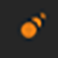
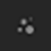
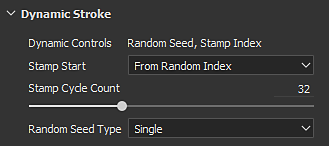

Icon
To enable the Dynamic Strokes feature a specific resource is required first.
When browsing the Assets window, a dedicated icon at the bottom right of a thumbnail indicates the compatibility type of the resource. If there is no icon visible it means the resource can't take advantage of the feature.
|
Icon |
Description |
|---|---|
|

|
This resource can use one or more of the following behaviors :
|
|

|
This resource only exposes the Random Seed parameter. |
It is also possible to search resources by using the search field in the Shelf with the following keywords :

When a Dynamic Stroke resource has been loaded a new list of parameters is added just before the Substance parameter group.
| Parameter | Description |
|---|---|
| Dynamic Controls | List the parameters that are available with the Substance file currently used. |
| Stamp Start | Only available if the resource has the dynamic control "Stamp Index". Indicates from which value the index of the stamps inside the brush stroke should start from :
|
| Stamp Cycle Count | Only available if the resource has the dynamic control "Stamp Index". This parameters controls when Substance 3D Painter should stop generating new Substance variations and start recycling the existing ones. This parameter has a big impact on performances, which you can read more about Dynamic Stroke Performances. |
| Random Seed Type | Only available if the resource has the dynamic control "Random Seed". Controls how the Random Seed should change:
|
| Time | The time dynamic control doesn't have any parameter. Time is driven by how long the painting of a brush stroke is. |
The Dynamic Stroke settings are only available with the following Tools and contexts :
| Tool Type | Compatible Resource Slot |
|---|---|
| Paint |
|
| Eraser |
|
| Projection |
|
| Smudge |
|
| Clone |
|